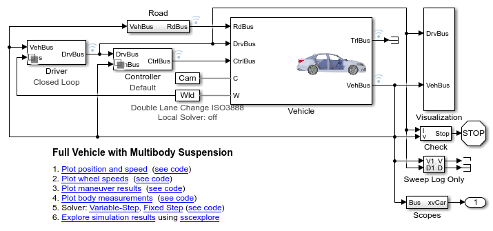

Optimizing Vehicle Design Using AI and Simscape

This example shows the workflow to create a surrogate AI model using training data from a multibody model of a vehicle. The resulting AI model can be used for design space exploration and for finding the optimal design parameters.
- Early-stage physical physical design is conducted by creating a reduced order model to rapidly evaluate hardpoint locations.
- Sensitivity analysis is conducted by running many simulations in parallel and analyzing the influence of design parameters on performance metrics
- Training data for the AI model is produced using Design of Experiments to ensure the entire design spaces is covered.
- Machine Learning and Deep Learning are both used to create surrogate models that are automatically validated against the generated data.
- Optimization algorithms are used to identify the set of design parameters that balance the tradeoff between multiple performance metrics.
- A MATLAB App enables exploration of the design space using responses surfaces.
Design Workflows
- Create Virtual Test with Performance Metrics
- Identify Key Parameters for Design
- Generate Training Data by Running Design of Experiments
- Train and Validate Machine Learning Surrogate Model of Design Space
- Train and Validate Deep Learning Surrogate Model of Design Space
- Optimize Suspension Design Parameters Using Surrogate Model
- Interactively Explore Design Space
Workflow Overview